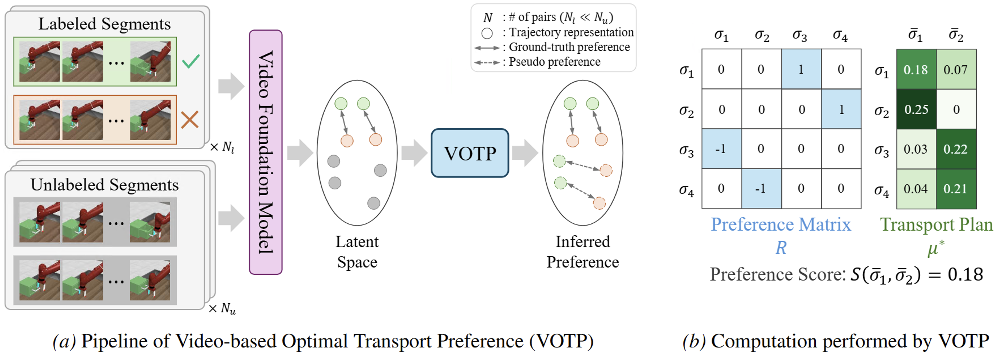
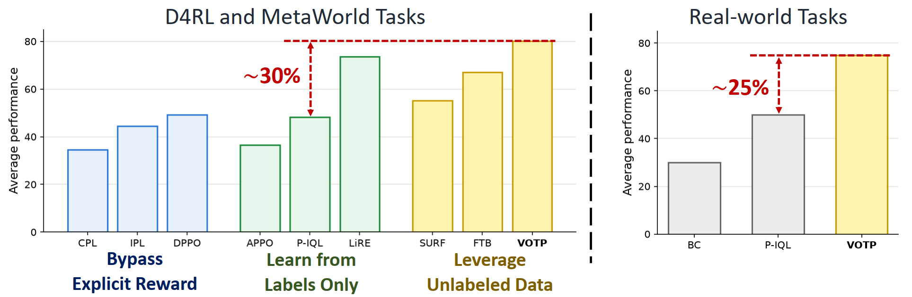
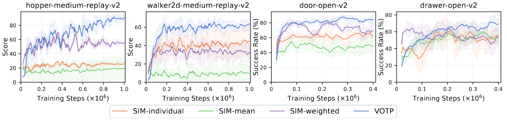
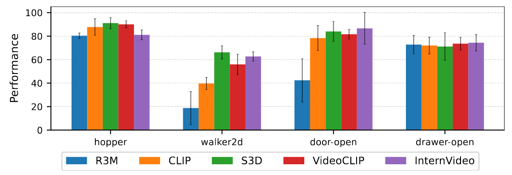
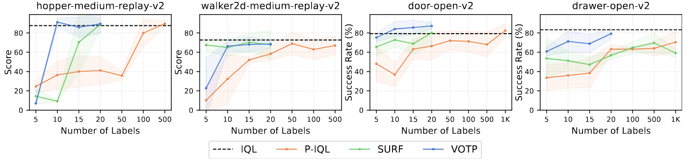
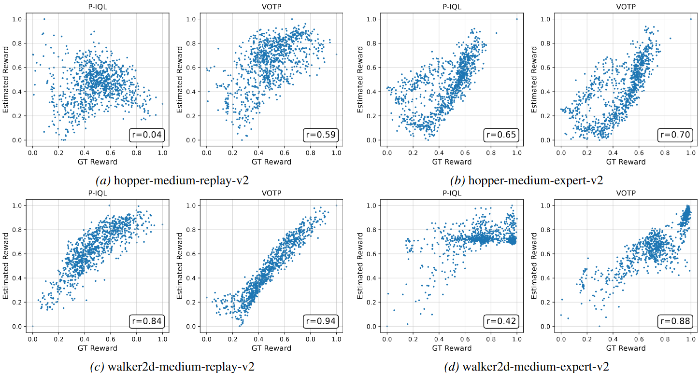
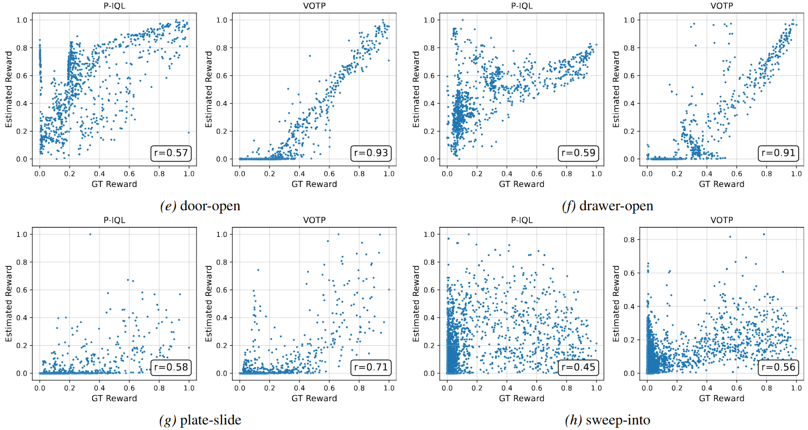
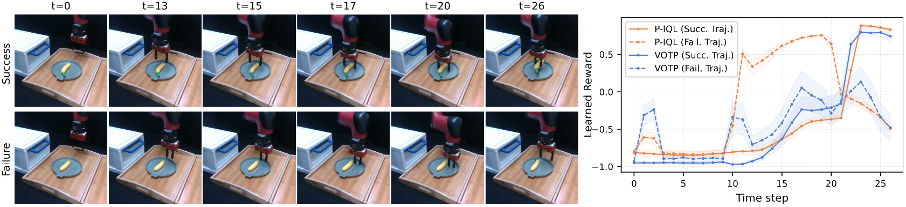
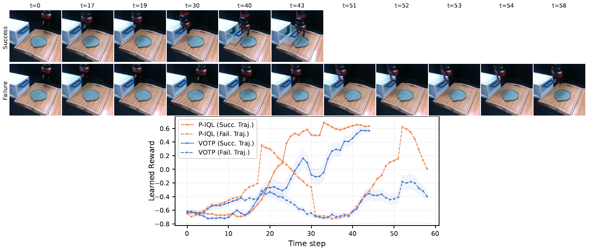

Conveying complex objectives to reinforcement learning (RL) agents often requires meticulous reward engineering. Preference-based RL (PbRL) offers a promising alternative by learning reward functions from human feedback, but its scalability is hindered by high labeling costs. Inspired by advances in Video Foundation Models (ViFMs), we present Video-based Optimal Transport Preference (VOTP), a semi-supervised framework that learns effective reward functions from only a handful of labels. By leveraging optimal transport to align visual trajectories within the rich representation space of ViFMs, VOTP effectively generates high-fidelity pseudo-labels for large amounts of unlabeled data, substantially reducing human supervision. Extensive experiments across locomotion and manipulation benchmarks demonstrate the superiority of VOTP, which outperforms state-of-the-art offline PbRL methods under limited feedback budgets. We also showcase the robustness of VOTP in the presence of visual distractors and validate its utility on real robotic tasks, where it learns meaningful rewards with minimal human input.
VOTP is a semi-supervised framework for offline preference-based RL that learns an effective reward function from only a handful of human preference labels. The key idea is to use optimal transport (OT) to align visual trajectories within the rich representation space of Video Foundation Models (ViFMs), turning a small labeled set into high-fidelity supervision over a large pool of unlabeled trajectories.

Given a small set of human-labeled trajectory pairs and a large set of unlabeled trajectories, VOTP first embeds each trajectory into the representation space of a pretrained ViFM (e.g., S3D). It then computes an optimal transport alignment between unlabeled trajectories and labeled references, using the resulting transport plan to propagate preferences from labeled to unlabeled pairs through relative alignment strengths. Training the reward model on both the human labels and these pseudo-labels substantially reduces the amount of human supervision required. The learned reward is then used to optimize the policy with an off-the-shelf offline RL algorithm.
In simulated environments, we evaluate VOTP on Gym D4RL locomotion and MetaWorld manipulation benchmarks under limited feedback budgets and compare it against state-of-the-art offline preference-based RL methods. We also evaluate its robustness to visual distractors and validate it on real-world robotic tasks.

We use IQL as the offline RL algorithm in VOTP. The results show that VOTP achieves strong policy performance under limited human feedback (e.g., 10 labels). Notably, by leveraging unlabeled data, VOTP significantly improves performance over P-IQL, which uses the same underlying RL algorithm but is trained only on labeled data.

This analysis highlights the role of optimal transport in pseudo-label inference. We compare OT with heuristic methods that infer preferences solely from similarity. Unlike these heuristics, VOTP aggregates preferences from multiple labeled trajectory pairs, weighting each contribution according to the relative alignment strengths computed by the OT plan to produce more reliable pseudo-labels.

We find that Video Foundation Models generally outperform Image Foundation Models. This improvement highlights the advantage of video representations, which capture temporal dynamics and subtle motion cues to provide richer trajectory representations. These cues are crucial for distinguishing behavioral differences when inferring preferences.

Performance generally improves as the number of initial labels increases. Notably, on the door-open task, VOTP trained with only 10 labels outperforms a policy trained with ground-truth rewards.


The strong Pearson correlation between the estimated and ground-truth rewards demonstrates that VOTP effectively leverages unlabeled data to learn a more accurate reward model. This improved reward quality explains VOTP's substantial performance gains over P-IQL, which relies solely on labeled data.


We visualize the learned rewards along successful and failed trajectories. Although both methods correctly assign high rewards to successful behavior, P-IQL mistakenly assigns similarly high rewards to failed trajectories. In contrast, VOTP learns a much more discriminative reward function, clearly separating successful and failed behaviors.
@inproceedings{
luu2026video,
title={Video-Based Optimal Transport for Feedback-Efficient Offline Preference-Based Reinforcement Learning},
author={Tung M. Luu and Hwanhee Kim and Younghwan Lee and Chang D. Yoo},
booktitle={Forty-third International Conference on Machine Learning},
year={2026}
}